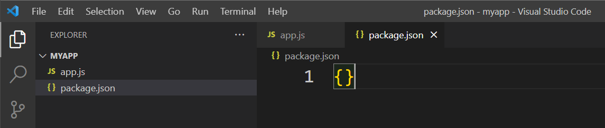
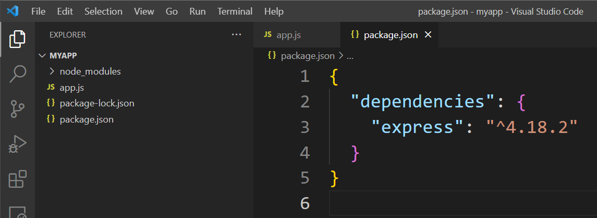
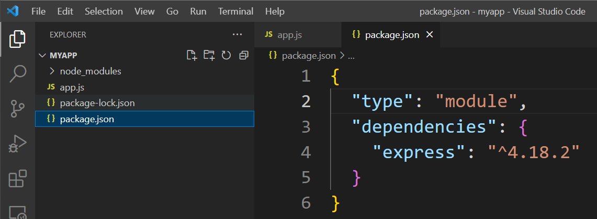
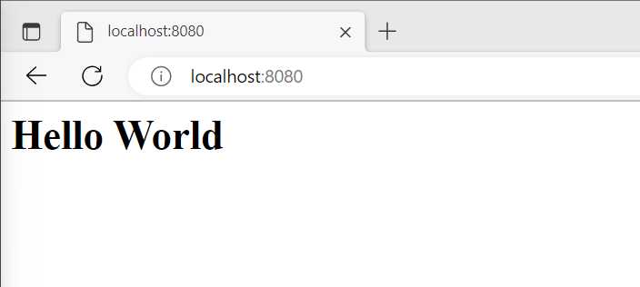

Express is a backend web application framework for building Rest API's with Node.js. Express provides a wide range of features and functionality, including routing, and template engines. It also has a large and active community, which has developed many plugins and modules that can be easily integrated into an application.
1. Create a folder called `myapp` to contain the application
2. Open the folder in VS Code
3. Create a file called `app.js`
4. Create a file called `package.json`
5. Write a set of curly braces `{}` in the `package.json` file
6. Open the integrated terminal in VS Code and write the command `npm install express` to install Express
7. You should now have a folder called `node_modules`, a `package-lock.json` file. Futhermore, the `package.json` file should now contain a JSON object called `dependencies` with one key/value pair as shown on the screenshot below:
8. To allow us to use the import and export statements introduced in ES6 (ECMAScript 6) modules we will have to add another key/value pair in the `package.json` to let Node.js know that we want to use it - write `"type": "module"` as shown below:
9. Now let's import express in the `app.js` and instantiate it in a variable called `app`. To do so, copy the code below and paste it into `app.js`
import express from "express";
const app = express();
10. In the bottom of `app.js` we will now define a port and make the app listen on that port. When an Express app is listening on a specific port, it means that it is actively waiting for incoming HTTP requests on that port number, and any incoming requests that match the app's defined routes and methods will be handled by the app.
const PORT = 8080;
app.listen(PORT, (error) => {
if (error) {
console.log(error);
} else {
console.log("Server is running on", PORT);
}
});
11. It is now time to create our first route and with it let the app
handle a HTTP GET request to the specific endpoint `/`. For now we will
just let the app respond with a simple <h1> tag:
app.get("/", (req, res) =>{
res.send(`<h1> Hello World <h1>`);
});
12. It is finally time to run the app! Open the integrated terminal in VS Code and write the command `node app.js`.
13. Open your browser and navigate to the endpoint we created on http://localhost:8080/
14. You should be able to see the following in the browser:
